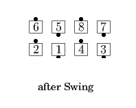
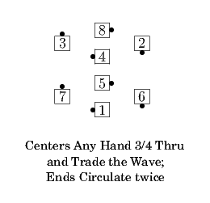
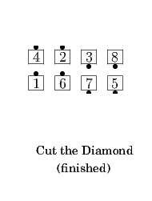
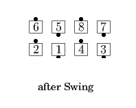
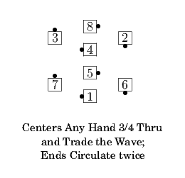
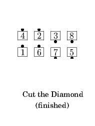

The Gamut
The Gamut
From Parallel Lines with the centers in a Mini-Wave Box: Ends Circulate twice as the Centers Any Hand 3/4 Thru and Trade The Wave; all Cut The Diamond. Ends in Parallel Lines.
Swing the Gamut
From Ocean Waves: All Arm Turn 1/2; then The Gamut.
 





© Copyright 2004-2017 Vic Ceder and CALLERLAB Inc., The International Association of Square Dance Callers. Permission to reprint, republish, and create derivative works without royalty is hereby granted, provided this notice appears. Publication on the Internet of derivative works without royalty is hereby granted provided this notice appears. Permission to quote parts or all of this document without royalty is hereby granted, provided this notice is included. Information contained herein shall not be changed nor revised in any derivation or publication.